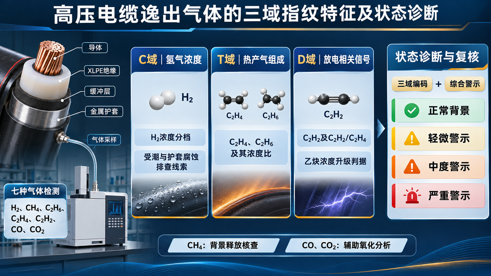

HV Lab
HV LabResearch
---Research Direction---
方向1. 电力设备状态监测与故障诊断
本团队聚焦电力设备状态监测与故障诊断，围绕变压器、GIS、电缆及断路器等核心设备，构建“多源感知-特征提取-智能诊断-寿命预测”的完整技术链条。研究涵盖振动声纹、红外热像、局部放电及油中溶解气体等多模态信号的融合分析，重点发展基于深度学习与物理机理混合驱动的故障识别模型，攻克小样本、强噪声环境下微弱故障特征提取与早期预警难题。同时，团队探索数字孪生与边缘计算架构在状态评估中的工程落地，致力于实现从被动检修向预测性维护的范式转变，为新型电力系统下设备安全稳定运行提供理论支撑与技术手段。

方向2. 电缆绝缘老化、诊断及修复
电缆绝缘老化、诊断及修复研究以XLPE电缆为主要对象，围绕水树—电树交替共生老化这一核心劣化形式展开：在机理层面，揭示水树在不同温度、电压及机械应力下的生长动力学及其向电树转换的临界条件，结合理化分析与微观形貌观测建立老化程度与羰基指数、结晶度等微观指标的对应关系；在诊断层面，针对传统介损测试灵敏度不足的问题，研究基于极化—去极化电流的pA级等电位测试技术并提出以直流电导率与非线性系数为判据的分级诊断方法，同时利用频域反射法结合振荡波局放定位与时间反演算法提升缺陷定位精度；在修复层面，研制兼具疏水性与电—热老化抗性的复合硅氧烷修复液，研究电场偏置定向注入或带电修复工艺以填充水树微孔，并评估修复后绝缘耐压恢复水平与寿命延长效果，最终形成"机理揭示—量化诊断—高效修复"的完整技术链条。

方向3. 高压电缆逸出气体的三域指纹特征及状态诊断
针对受潮腐蚀、材料热降解和放电等过程的产气特征相互重叠、单一气体浓度难以判别异常来源的问题，团队基于116条电缆本体现场测试记录，利用梯度提升决策树分析各气体浓度及浓度比对状态分类的贡献，并结合产气机理构建氢气浓度域（C域）、热产气组成域（T域）和放电相关信号域（D域）。该方法联合分析七种逸出气体，输出三域编码、综合警示等级及具体触发条件。对4条线路的10条典型记录复算表明，相同警示等级可对应不同的气体特征和触发条件。通过保留这些差异，三域指纹可为电缆状态评估、现场复测和专项检查提供可追溯的依据。

方向4. 透明地下电缆系统(TUCS)
透明地下电缆系统(TUCS)是由我们团队率先提出的新一代地下电缆系全息感知体系。将原本“看不见、摸不着、难定位、难评估”的地下中低压电缆网络，转化为可感知、可定位、可诊断、可预警的“透明化”数字资产。目标：实现地下电缆从“黑箱运行”向“可视、可判、可预、可控”的转变。